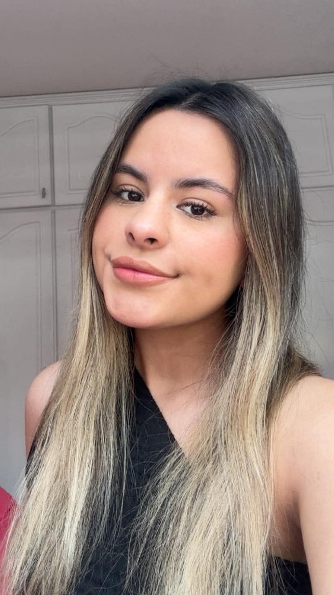

Sobre mí

Hola, soy Giuli, estudiante de Negocios Digitales y apasionada del maquillaje. Creé este blog para compartir recomendaciones, tendencias y consejos de belleza. Creo que el maquillaje es una forma de expresión y de creatividad. Me encanta probar productos nuevos y conversar con quienes comparten esta pasión.
Mis intereses
- Maquillaje y cuidado de la piel
- Marketing digital y redes sociales
- Fotografía y creación de contenido